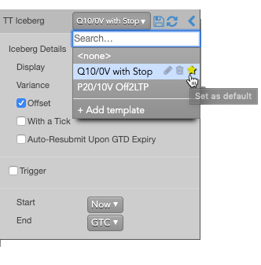
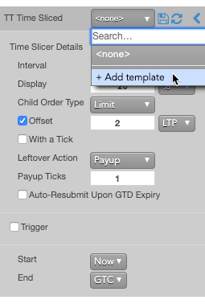
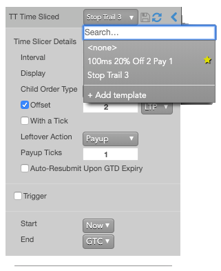

Templates allow you to save frequently-used TT Order Type settings for future use. They let you quickly select a set of predefined values from a TT Order Type flyout or to assign the set of values to a custom action button in MD Trader. You can create multiple templates for a specific TT Order Type as well as create different sets of templates for different TT Order Types. These templates can be selected from the drop-down to populate the order parameter fields with the saved values.

The template drop-down menu also lets you specify a default template (indicated by the yellow star) that will appear pre-selected every time you select the associated TT Order Type. You can revert to the default system settings by selecting the <none> option.
Creating a TT Order Type template
To create a TT Order Type template:
-
Select a TT Order Type from MD Trader or Order Ticket.
-
Select Add template from the Templates drop-down menu.

-
In the Add template dialog, enter a Name for the template, and click Save.
The template is added to the drop-down.
-
Update the desired order parameter values, and click the  icon.
icon.
Using a TT Order Type template
To use a template for a TT Order Type:
-
Select a TT Order Type from MD Trader or Order Ticket.
-
From the Templates drop-down, select the template to update the current values with those in the template.

-
Make any desired changes to the algo parameters.
-
If desired, specify a custom Instance name for the algo instance.
-
Click Launch to launch the algo template.
Modifying a TT Order Type template
To modify a TT Order Type template:
-
Open the flyout for the desired TT Order Type.
-
From the Templates drop-down, select the template you want to modify.
-
Update the desired parameter values, and click the icon.
Setting a default TT Order Type template
You can select a default template to use whenever you select a TT Order Type. After selecting a default template, the values in that template are pre-populated when you select that TT Order Type.
To set a default template for an TT Order Type:
-
Select a TT Order Type from MD Trader or Order Ticket.
-
Click the Templates drop-down menu.
-
Click the  icon for the template you want to make the default.
icon for the template you want to make the default.
Deleting a TT Order Type template
To delete a TT Order Type template:
-
Select a TT Order Type from MD Trader or Order Ticket.
-
Click the Templates drop-down menu.
-
Click the  icon for the template you want to delete.
icon for the template you want to delete.